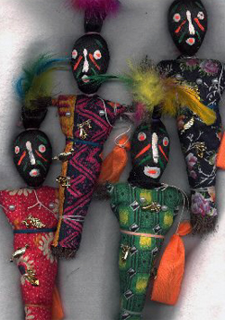
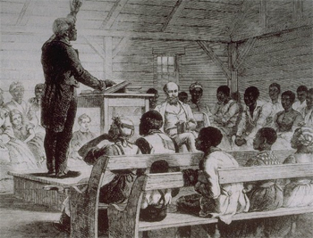
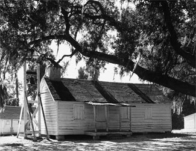

|
When enslaved Africans came to the New World, they brought the languages,
religions, and cultures of many different African ethnic groups. They were, in
turn, substantially influenced by their contact with Christianity. Consequently,
African American religion developed as a dynamic blend of European and African
beliefs and customs. It helped practitioners to cope with the challenges they
faced, either as slaves, or as freedmen in a world dominated by racism.
Most slaves in the New World came from West Africa. While Islam had made
major inroads there by the eighteenth century, and Christianity had also made an
appearance on the scene, the majority of the individuals who became slaves
practiced what are now called African Traditional Religions (ATR). Each group
had its own particular customs, but most ATR shared several common features.
They were, first of all, polytheistic, with a central god or goddess who was
believed to have created the universe, and who was surrounded by a pantheon of
lesser gods. ATR were also animistic--practitioners believed that individual
spirits inhabited animals, trees, and even inanimate objects. As the creator god
was seen as unapproachable, these spirits were very important, and Africans
called on them to assist in all manner of tasks.
|

Voodoo totems like these, called gris-gris, were
used by some slaves, particularly in Louisiana. Voodoo was among
the elements of slave religion that show a distinct African
influence.
|
Another common feature of ATR was an emphasis on kinship networks. Africans
used dancing, music and animal sacrifice to bless their newborn, to initiate the
younger generation into their communities, and to bury their dead. Funerals were
seen as especially important, because they provided a direct link between those
left behind and those who had passed over into another world. A characteristic
ritual involved pouring the first drink from a bottle on the grave of a
relative, so as to give them the first "taste" before it was consumed.
ATR differed from Christianity and Islam in many ways. They had no founder,
and relied on oral traditions rather than formal scripture. Further, ATR lacked
the hierarchy that is characteristic of Catholicism and other Christian
religions--there was no African analog to bishops and deacons and other such
offices. In ATR, religious officials each had specific tasks to perform, and
none had authority over the others. Priests--also called shamans--presided at the
altars of specific deities, and were responsible for mediating the relationship
between individuals and those deities. Healers used plants and rituals to cure
the sick. Rainmakers, in those societies that had them, were responsible for
bringing rain when it was needed.
The extent to which ATR survived Atlantic slave trade was dependent on a
number of factors. In places that had high concentrations of slaves,
particularly slaves that came from the same area, African traditions often
remained fairly intact. This happened most commonly in South America and the
Caribbean, where religions like Haitian vodou include a great many African
features. In North America, fewer elements of ATR survived. In part, this was
because the slave communities in North America tended to be a jumble of
different cultural groups who were compelled to adapt to one another. And in
part it was because African religions depended on things that were present in
Africa--ancestors' graves, plant species, geographic features--that did not exist
in North America. As a consequence, African religion in North America was very
fluid, and was susceptible to the influence of Christianity, much more so than
in South America or the Caribbean.
Slavery came to North America in the first decades of the seventeenth
century. For much of the United States' colonial era, however, there was little
mixing of ATR and Christianity. The Protestant religion, as it was practiced in
that era, was so thoroughly foreign to Africans that they had difficulty
understanding it, much less embracing it. It was monotheistic, anti-ritual, and
demanded passive worship rather than the singing and dancing that Africans
preferred. Further, most Europeans had little interest in trying to spread their
religion to the Africans, as it was widely believed that they lacked the mental
and moral capacity to practice Christianity. Moreover, slave owners worried that
Christian slaves might conclude they were equal to whites and would rebel.
It was in the middle of the eighteenth century that African and European
religious traditions began to converge. A seminal event in the development of
African American religion was the Great Awakening, a period of religious
revivalism in America that lasted from the 1730s to the 1760s. Inspired in part
by the ideas of the Enlightenment, the leaders of the Great Awakening taught
that God and his salvation were available to everyone--one need not be literate,
or wealthy, or white. The leading evangelist of the movement, George Whitefield,
often preached before racially integrated gatherings. Some theologians went so
far as to argue that white Americans had a duty to lead African Americans to
salvation. Others, of a more cynical bent, argued that Christianity would make
slaves more docile and easier to control. Consequently, many slave owners began
to allow their slaves to attend, or even conduct, religious services where
previously such activities would have been prohibited.
|

Slaves attend a church service in this newspaper
illustration. Often, as shown here, their owners joined the service
so as to supervise (and censor, if necessary).
|
In addition to inspiring a dramatic change in the attitudes of white
Christians, the Great Awakening also changed the style in which they worshiped.
After 1750, many Protestant denominations offered a religious experience that
stressed the emotional rather than the doctrinaire, with services that appealed
greatly to African Americans. Sermons were often delivered outdoors, and were
alive with highly emotional singing, praying, clapping and dancing. Some
participants passed out from joy, and it was not unusual to see people in a
trancelike state or to hear converts speaking in tongues. These practices
closely mimicked ATR, and can still be seen in Baptist, Pentecostal and Holiness
churches.
In the 1770s and 1780s, the spread of Christianity among African Americans
was further encouraged by the rhetoric of the American Revolution. The leaders
of the rebellion exchanged voluminous correspondence, comparing their situation
to slavery, and speaking of their God-given right to liberty. Though most of
these men, many of them slaveholders, did not intend their rhetoric to include
African Americans, a few did make the connection. White patriots James Otis,
Thomas Paine and Benjamin Franklin all warned of the conflict between agitating
for freedom while holding slaves. In 1776, slaveholder Thomas Jefferson even
incorporated a passage critical of slavery into the Declaration of Independence,
though that portion was ultimately excised from the final draft. At the same
time, American Quakers became the first religious denomination to brand slavery
as a sin.
African Americans, especially those in New England, a hotbed of revolutionary
activity, were well versed in the calls for liberty and the documents supporting
it. Given the consistent blending of Christianity and democratic rhetoric, it
was possible for the first time to view Christianity as a religion of
liberation, and to use it to resist slavery and racism. For example, eight
African Americans from Boston petitioned the Massachusetts legislature to free
the slaves in January of 1777, and used Christianity to bolster their arguments.
The Revolutionary era also witnessed the emergence of the first African American
preachers, and the first formal African American Christian congregations.
In the first half of the nineteenth century, Christianity made even deeper
inroads into the African American community. Many leaders of the Second Great
Awakening, which ran from the 1800s to 1830s, emphasized the importance of
missionary activities, which encouraged church leaders to reach out to black
Americans. Slaves and freedmen alike were welcomed at Presbyterian, Baptist, and
Methodist camp meetings--enthusiastic, expressive religious exercises that might
last as much as a week. In addition, many clergymen established plantation
missions. Slaves could hear services, attend Sunday School, and even help lead
their congregation. The missions reached their height in the 1840 and 1850s, and
served to draw many slaves into the Christian fold.
As a consequence of the changes wrought in Protestantism by the two Great
Awakenings, of the philosophy of the Revolution, and of white missionary
activities, Christianity had a firm hold among African Americans by the middle
of the nineteenth century. By the start of the Civil War, perhaps as much as 30%
of the slave population, and an even higher proportion of the free African
American population, had joined a Christian denomination. Among those who had
not formally converted, Christian beliefs and practices were widespread, and it
would have been difficult to find any remaining elements of ATR that had not
been shaped in some way by contact with Christianity.
The religion practiced by slaves varied according to region, owners'
attitudes, denomination, time period, the makeup of the local African American
population, and a host of other factors. Nonetheless, some generalizations are
possible. The preeminent Christian sects among slaves were the Baptists and
Methodists, and those individuals that formally converted typically underwent a
profound conversion experience. Worship occurred in large open meetings overseen
by whites, and in secret meetings overseen by slaves. The former usually
featured much dancing and singing, while the latter were, by necessity, more
subdued. Preaching was a common feature of all religious gatherings, as were
public declarations of faith called testifying. As with white churches, slave
congregations were patriarchal. Women were typically not welcome in formal
positions of leadership, although a handful were ordained to preach. They did
often serve as healers for slaves and their owners, and also acted as spiritual
mothers who helped train young people in the ways of religion. In this way,
black women were often the backbone of religious life in slave communities.
|

This chapel was used by slaves for more than a century.
|
Naturally, slaves interpreted the Bible in ways that helped them to make
sense of and cope with their lot in life. They believed that just as God had
freed Shadrach, Meshach and Abedego from the fiery furnace, and Daniel from the
lion's den, so too would he free them. Jesus was understood as the Messiah King
who would carry the slaves to freedom in heaven, and whose resurrection would
end slavery on Earth. The story of Moses, who led the Jews out of slavery, also
had a powerful resonance. Inasmuch as white Southerners argued that the Bible
justified slavery, many slaves were compelled to conclude that the religion of
slaveholders was deeply corrupt, and that their masters would be punished in the
afterlife. In the interim, resistance was justifiable, and slaves understood the
Bible as legitimizing sabotage, malingering, deliberate destruction of property,
and other forms of retaliation.
The ideas that many slaves found in the Bible presented a grave danger to the
slave system, and slave owners did their best to exercise control. However,
slaves generally managed to avoid their masters' watchful gaze. Sometimes, this
was accomplished by meeting in secret at gatherings called "bush meetings".
Another alternative was to communicate in code. Nowhere is this more apparent
than in the singing of Negro spirituals, which gave a collective voice to the
sufferings of slaves. The songs helped them transcend the dehumanization of
slavery and gave them great comfort, joy and a reason to hope for the future. A
direct outgrowth of African musical traditions, spirituals were often improvised
on the spot to incorporate the day's experiences, and were passed down orally.
Quite often, the words in Negro spirituals had dual meanings about bondage and
escape. For example, "Steal Away to Jesus" alludes to both ascension into heaven
and to running away from the plantation:
Steal away, steal away,
Steal away to Jesus!
Steal away, steal away home,
I ain't got long to stay here.
My Lord, He calls me,
He calls me by the thunder;
The trumpet sounds within my soul,
I ain't got long to stay here.
Some spirituals even contained specific coded instructions for escape to
freedom. For example, "Swing Low, Sweet Chariot," "The Gospel Train," and
"Follow the Drinking Gourd" all contained information about the Underground
Railroad, used by thousands of slaves to flee the South.
Christianity was the only religious tradition that presented a challenge to
the slave system, however. Though Muslim slaves were a very small minority--no
more than 10 percent of the slave population--they proved particularly
troublesome for slave owners. Most African Muslim cultures were literate and
highly organized. As such, the slaves that came from those cultures tended to
emerge as leaders of resistance to slavery on plantations. The most prominent
example is Omar Ibn Said, a Muslim scholar born in present-day Senegal. In 1807,
at the age of 34, he was captured, enslaved, and sent to the United States. Ibn
Said changed hands several times, as his masters found him to be a dangerous
influence on his fellow slaves. He also escaped on one occasion, albeit briefly,
and wrote several manuscripts, including a narrative of his life. His slave
narrative, like others, was a useful tool for abolitionists in their fight
against slavery. Other Muslim authors who penned narratives include Job Ben
Sulaiman and Abu Bakr Said.
The connection between Islam and resistance to white racism would remain
salient throughout the antebellum years and into the twentieth century. Indeed,
the roots of both Martin Luther King, Jr.'s Christian nonviolence and Malcolm
X's Nation of Islam, each of which emerged in the 1950s, can be traced back to
the era of slavery.
Slave owners were quite correct to fear the potential for slave religion to
foment revolt, if not carefully controlled. Indeed, two of the most famous slave
revolts in American history were led by men with active ties to religion, and
were in part planned in and disseminated through black churches.

Nat Turner
|
Denmark Vesey was a free black man born in the Caribbean; he was literate and
familiar with revolutionary movements around the world. A devout Methodist who
often quoted the Bible and taught religion classes, Vesey was fond of the Old
Testament deliverance stories, especially the tale of the Jews in Egypt. He
seethed with anger at how white officials harassed black Christians, and was
determined to lead his own revolution. He began his planning in 1819. To
communicate his scheme to free African Americans, Vesey used his connections
within the Methodist church. To reach low-country slaves who were still attached
to their African customs and had blended them with Christianity, he engaged the
help of Jack Pritchard, a conjurer also known as Gullah Jack. Through the use of
spells, charms, and the like, Gullah Jack was able to convince slaves in this
region that they would prevail against the slaveholders. Vesey's rebellion never
transpired, however; a slave alerted his master and over 100 conspirators were
arrested. Vesey, Gullah Jack, and 35 others were hanged.
Nat Turner was born a slave in 1800. More privileged than most slaves, he
learned to read as a small boy in Virginia and spent much time studying the
Bible. He became a preacher and was someone to whom the local slaves looked to
for leadership. By the late 1820s, he had become convinced that God intended to
use him as the Moses of his time, and that he would free his fellow slaves from
bondage. He recruited about seventy followers, and on the night of August 21,
1831, he began his revolt. 57 whites--some of them women and children--were killed
before Turner and his men were captured. He and seventeen of his force were
convicted of treason and executed. In addition, frightened whites in North
Carolina and Virginia killed more than one hundred African Americans whom they
suspected of being in league with Turner.
The rebellions led by Vesey and Turner were watershed moments for the African
American religious community. Both men were well versed in the Bible and
skillfully used elements of African culture, as well as Old Testament resistance
and deliverance stories, to convince slaves that God meant for them to be free.
They used the black church as a fundamental tool in the fight for freedom and
civil rights, setting a precedent that would be followed by African American
leaders a century later.
Source: Christopher Bates, ed. The Encyclopedia of the Early
Republic and Antebellum America (Armonk, NY: M.E. Sharpe, 2010), 866-871.
|